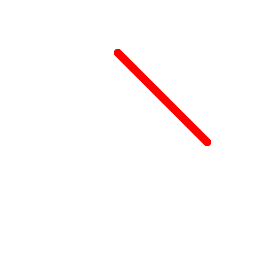
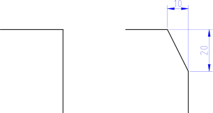

Chamfer / Bevel
Toolbar / Icon:


Menu: Modify > Chamfer / Bevel
Shortcut: C, H
Commands: bevel | chamfer | ch
Description:
Bevels a corner shaped by two entities. Optionally, the edge entities of the
corner can be trimmed automatically to fit the new shape.

Procedure:
- Enter the geometry of the bevel in the options tool bar. 'Distance 1' is
the distance the bevel line will have from the (imaginary) intersection of
the two edges (10 in the example shown). 'Distance 2' is the same distance
for the second edge (20 in the example shown).
- Check 'Trim' if you want to trim the entities automatically. If the
option is disabled, the two entities will remain untouched.
- Choose the first edge entity (a line or an arc).
- Choose the second entity.